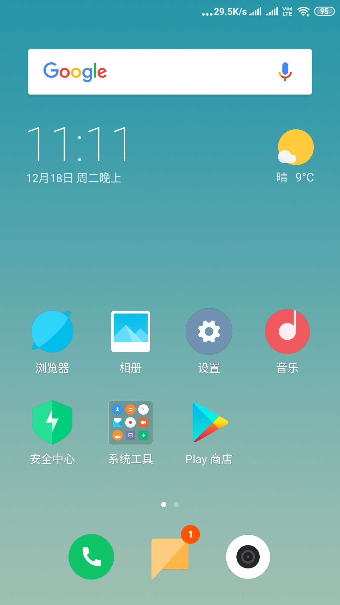
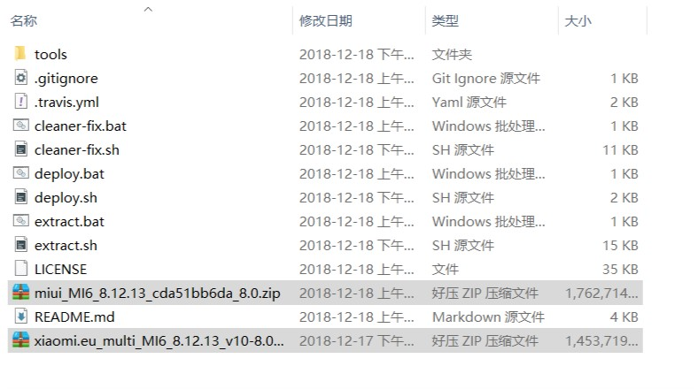
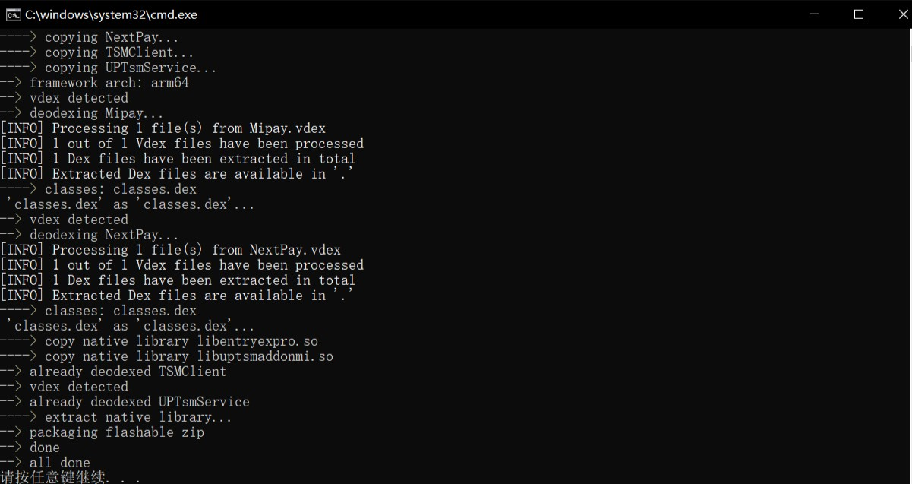
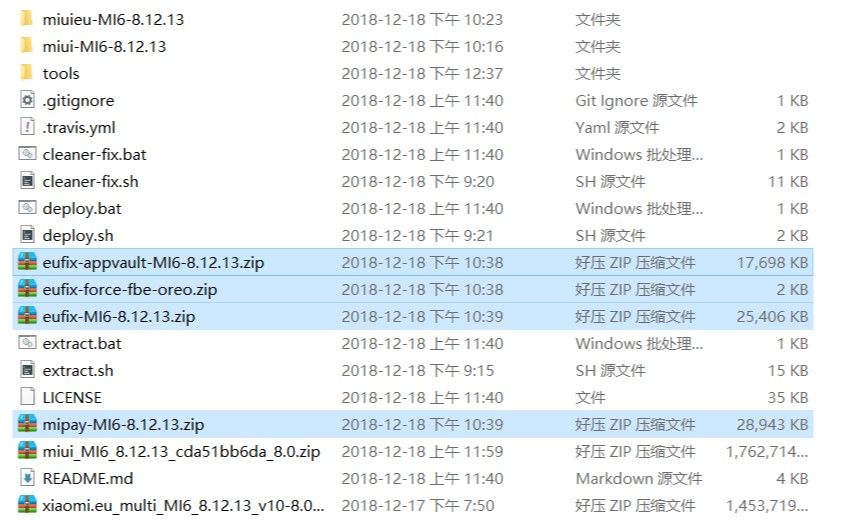

miui.eu，一个真正没有广告的系统，比国际版还要纯净
我一开始照着知乎这个教程刷的，刷了后死活开不了机，也就是卡在了MI界面，后来在miui欧洲论坛找到了这个答案，完全符合我的情况，不能直接从国内版刷成欧洲版，要先刷个国际版，在国际版的基础上才能刷欧洲版。
miui欧洲版自带人脸解锁，抬起亮屏，还有谷歌的Smart Lock，挺有意思。
首先要说的是，要折腾，先备份。
如果你用了谷歌验证器，可以象我一样换成Authy，通过手机登录，不用担心换手机找不回来
微信可以通过Windows端备份聊天记录
相册短信便签什么的就交给小米云，差不多就这些
其次要说的是，等下用到的所有提取出来的刷机包，在每一次更新系统后都会失效，你可以选择再次刷入。
特别地，关于支付安全，eu固件默认关闭了全盘强制加密（FBE）功能，这跟国内固件不一样，最直接的影响就是进入恢复模式不用解密，数据暴露在捡到你手机的人面前，所以我是选择刷入了开启加密的补丁包，同样的每一次更新系统就必须在更新后重新刷入force-fbe包，否则无法开机。
下面从第一步，你还是个国内miui系统开始
解锁bootloader
http://www.miui.com/unlock/index.html刷入国际版ROM
你没有看错，欧洲版和国内版系统分区不一样（我猜的），直接卡刷欧洲版我试过没法开机（可能还是因为FBE的缘故？），反正为了保证成功就先刷国际版ROM，顺便把系统和数据也清了- 去下载线刷包：线刷包地址
- 手机音量下+电源键开机，进入Fastboot模式
- 下载小米的通用刷机工具
- 按照教程一步一步往下做
- 注意软件打开右下角不要选
全部删除并lock，选择全部删除就可以了 - 线刷具体教程：http://www.miui.com/shuaji-393.html
不用开机，继续刷入twrp
怎么做到的呢，就是线刷软件提示刷入成功，手机重启的时候，还是按住音量下+电源键开机，进入Fastboot模式，通过ADB(刚才下载的通用刷机工具里有)终端命令来刷入。
如果还是不小心开机了没关系，等下刷系统的时候在twrp里面双清一下就可以了。- twrp官方下载
选择你的机型对应下载下来 - 打开adb终端
adb终端的位置在\MiFlash2018-5-28-0\Source\ThirdParty\Google\Android里面，进入到Android文件夹，鼠标在空白的地方按住Shift以后右键，选择在此处打开cmd/power shell窗口，就可以使用adb了。 终端输入命令
1
2fastboot flash recovery twrp.img
fastboot boot twrp.imgtwrp.img是替换成你的twrp包的路径和名称。- 第二条命令执行完后手机就会自己重启到twrp界面，可以设置成中文。
- twrp官方下载
进入twrp，刷eu固件
- 去下载miui欧洲版：miui欧洲版发布页面
- 格式化data分区
如果你想开启全盘默认加密，那就要在刷入下面的包之前先格式化data分区 - 连接电脑，把eu固件拷入sdcard目录
手机在twrp界面，电脑上应该能看到手机，不能的话在手机点挂载，然后点开启MTP - 注意： 如果你选择开启全盘加密，那么先去做第五步，把你要刷的包都刷入了再开机
- 从手机上点刷机，选择刷机包，完成，开机。
到这里已经完成miui欧洲版刷机了，选择语言，连WiFi，登账号
这是开机后的桌面
miui欧洲版阉割了很多比如小米钱包，里面的卡模拟的功能我用得到，包括公交卡什么的，所以接下来折腾如何装回这个应用提取Mipay安装包以及本土化修复包
要从中国版固件的system.img里面提取软件包，还要通过Root权限把软件包写入System分区，这里有一个教程：MIUI国际版mi pay解决方案，里面叙述了详细经过，但是我没用这个方法，虽然尝试过但是卡在了挂载镜像那一步。
我从另一个地方找到了方便的方法：Mi Pay Extractor，是一个提取脚本，可以自动提取出卡刷包中的MiPay软件和日历、天气等。
直接git clone到本地下载zip包windows用户不要git clone到本地，去直接下载zip文件来避免等下会出现的换行符问题：repo的下载链接
linux用户无妨
1
https://github.com/linusyang92/mipay-extract.git

- 下载国内的miui最新卡刷包，放入同一目录
- miui欧洲版卡刷包，也放在同一目录
运行
extract.bat，如果出现下面这样的错误：1
2
3
4
5
6
7
8extract.sh: line 2: $'\r': command not found
extract.sh: line 3: cd: $'.\r': No such file or directory
extract.sh: line 4: $'\r': command not found
extract.sh: line 6: $'\r': command not found
extract.sh: line 18: $'\r': command not found
extract.sh: line 19: syntax error near unexpected token `$'{\r''
'xtract.sh: line 19: `exists() {
请按任意键继续. . .那就是因为
extract.sh文件用的换行符不对，把原来的换行符CRLF改成LF后保存就可以正常运行了
Windows下双击extract.bat就可以开始提取，会要几分钟时间。
这样就说明提取成功，现在目录下会有mipay-MIxxx.zip,这就是一个卡刷包，通过twrp可以直接刷入- 运行
cleaner-fix.bat
生成修复日历和天气的刷机包，具体说就是让日历显示农历，天气app换回国内的。这个命令同时还会生成开启默认加密的刷机包。 - 对于想在负一屏还能用微信支付宝扫码快捷键的，以及查快递，
extract.bat --appvault可以生成这样的修复包，也就是替换成跟国内一样的信息助手
- 运行
Finally，我们有了四个准备卡刷的包：
全扔进手机，一个一个刷就是了
然而，你可能遇到跟我一样的错误：一个叫255的错误，简单来说就是以上这四个包，没一个能刷成功的，网上搜255错误，原因很多，没有一个能解决我的问题的，于是我慢慢想起了前面提到的CRLF，说不定又是这个东西在捣鬼。打开zip包，第一个文件夹META-INF一路点进去，最后看到了一个叫做update-binary的文件，这个文件类似于脚本，在刷机的时候执行的，和其他能刷成功的一对比发现确实是因为用了CRLF换行符导致错误的。用VScode打开转换成LF后保存，更新压缩包，这次就没有任何毛病了,在twrp下开启MTP把刷机包存到手机，可以全部成功刷入。在release页面有他提取好的卡刷包，虽然是Mix2的但是发现也适用于我的小米6，如果你是米6或mix2不想折腾也可以用作者提取好的
下面是安装小米应用商店，装了就可以用它来更新小米钱包，而不用每次想更新都去下载线刷包。
下载地址：https://xiaomi-market.cn.uptodown.com/android
不知道为什么这个网站是被墙了的，开全局去下
然后就可以安装了，一切都非常完美，可以一键装应用和更新
最后，终于写完了这个教程，自我感觉是很详细了，希望可以帮到跟我一样在折腾miui的人。我刷这个系统的初衷是国内版变得越来越难用，最主要的表现是经常熄屏自己莫名震动，还经常自己亮屏，打开了看也没有什么通知，后来上网一搜发现我不是一个人，这是小米系统本身的问题，那些震动是真的有通知不过之前被我从通知栏禁止了，可能禁止的层面不对，等通知到达了震动了系统才把通知删掉，这不是折磨人么。我就找能不能刷类似CM的原版安卓，然后就在知乎上看到了miui欧洲版，感觉对安卓的底层不会改太多，就折腾用欧洲版来了。现在用了两个星期，确实好用，字体不好看还换了个字体，外观上和国内版差别也不大。就是每次升级系统不是很方便就是了，之后会想办法用持续集成完成自动的提取。
2019-4-23更新：总结一下用miui-eu时更新系统步骤
下载eu包：
https://netix.dl.sourceforge.net/project/xiaomi-eu-multilang-miui-roms/xiaomi.eu/MIUI-WEEKLY-RELEASES/9.4.11/xiaomi.eu_multi_MI6_9.4.11_v10-8.0.zip下载国内相同版本包：
http://bigota.d.miui.com/9.4.11/miui_MI6_9.4.11_692ddc81ce_8.0.zip在
mipay-extract文件夹中执行以下命令1
2./cleaner-fix.bat
./extract.bat --appvault生成的4个包加上下载下来的eu包拷贝进手机，重启进入twrp选择刷机包刷机
可以批量选择刷机包，顺序是eu包在最前面，其他的在后面刷。